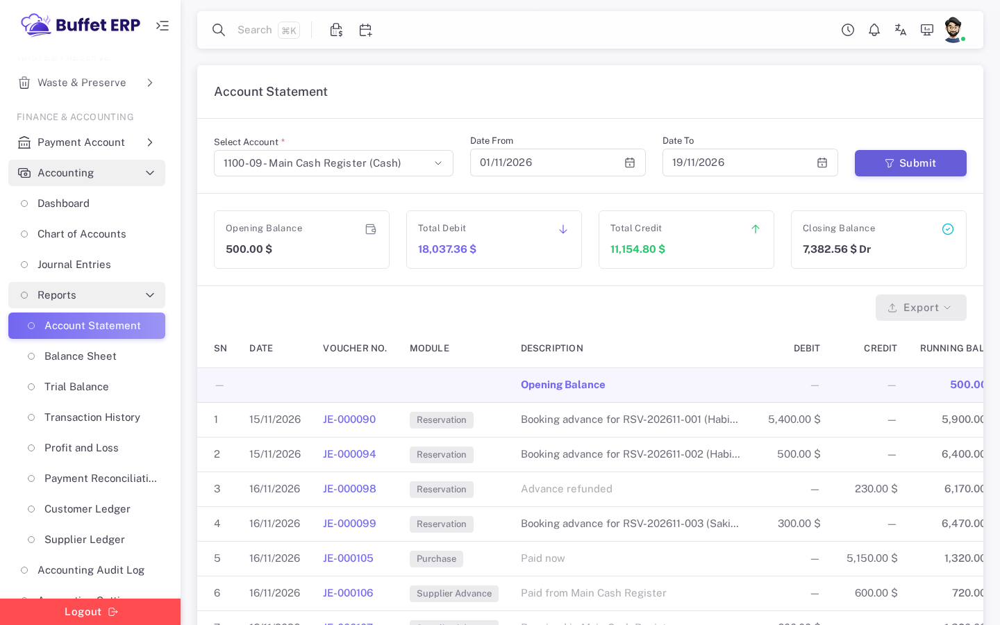
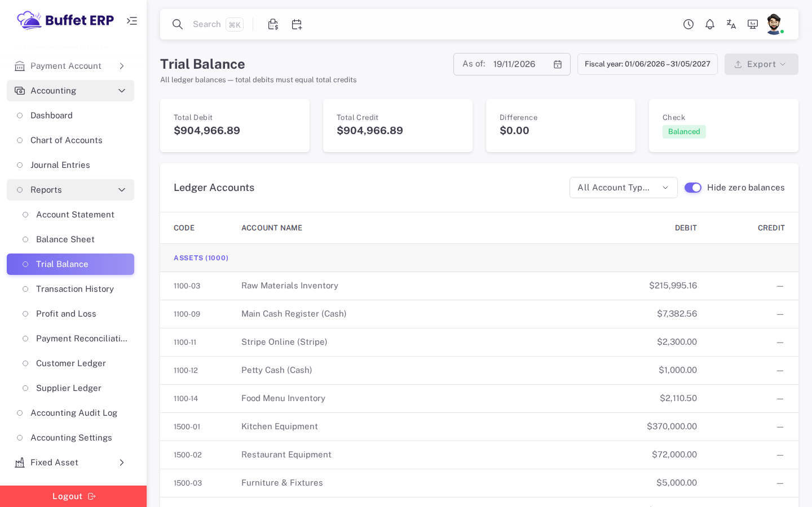
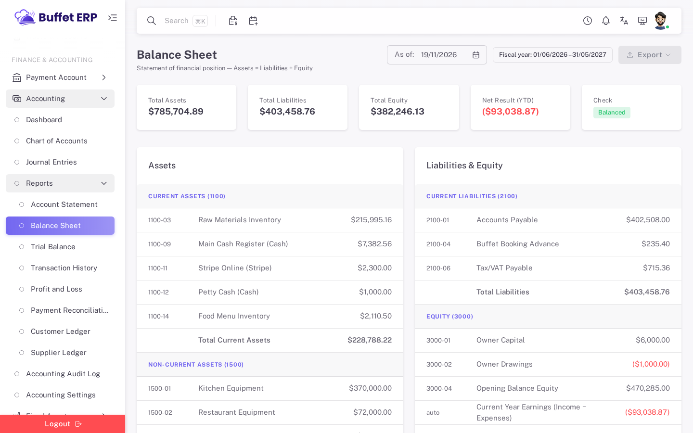
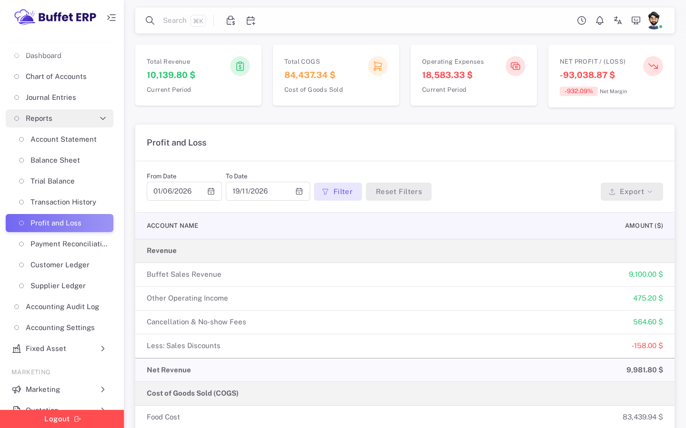
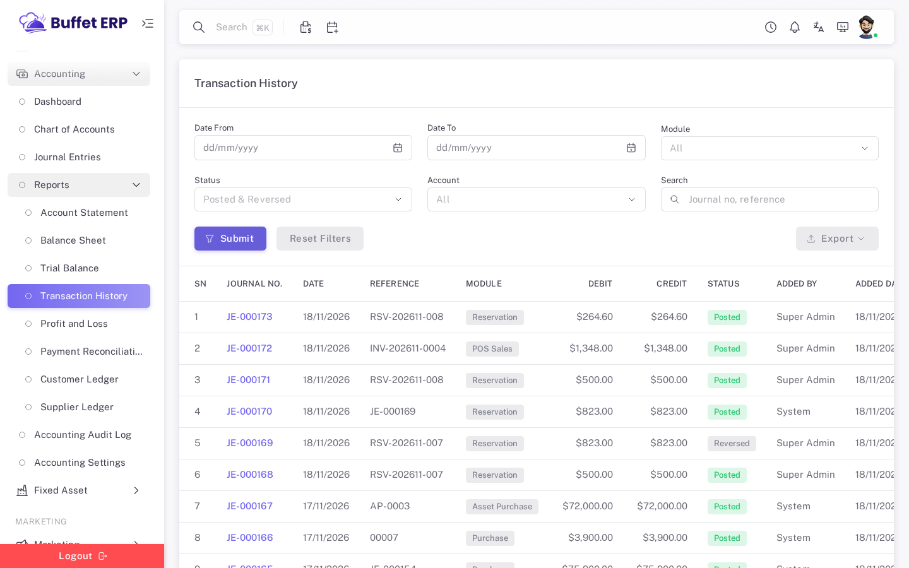
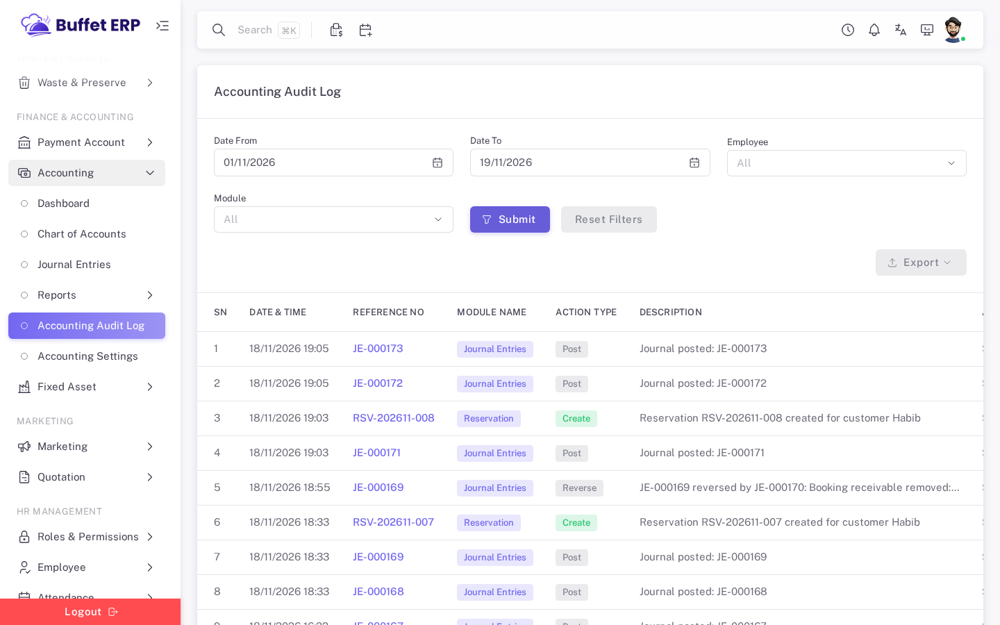

Accounting Reports & Ledgers
Trial balance, balance sheet, profit and loss, account statement, journals and audit log.
Before you start
These pages are under Accounting in the side menu. Sales, purchases, expenses, salaries and stock already write their accounting entries by themselves; these pages let you read and check them.
Debit and credit in one minute
Basics
Every entry balances
- Each entry has two sides that are always equal: Debit and Credit.
- A debit makes Assets and Expenses go up; a credit makes Liabilities, Equity and Income go up.
- Example: a guest pays 1,000 in cash for a buffet meal. Your cash payment account is debited 1,000 (an asset goes up) and Buffet Sales Revenue is credited 1,000 (income goes up).

Accounting > Reports
1
Account Statement
- Use it to see every movement on one account.
- Filters: Select Account, Date From, Date To, then Submit.
- Cards: Opening Balance, Total Debit, Total Credit, Closing Balance. Then SN, Date, Voucher No., Description, Module, Debit, Credit, Running Balance, and the Closing Balance.

2
Trial Balance
- Use it to check that total debits equal total credits.
- Options: As of date, All Account Types (Assets, Liabilities, Equity, Income, Expenses), Hide zero balances. The fiscal year is shown.
- Cards: Total Debit, Total Credit, Difference, Check (Balanced or Unbalanced). Columns: Code, Account Name, Debit, Credit.

3
Balance Sheet
- "Statement of financial position — Assets = Liabilities + Equity", on the As of date.
- Assets (Current Assets, Non-current Assets) on one side; Liabilities & Equity (Current Liabilities, Equity with Retained Earnings and Current Year Earnings) on the other.
- Cards: Total Assets, Total Liabilities + Equity, Check (Balanced or Unbalanced).

4
Profit And Loss
- Filters: From Date, To Date, then Filter (Reset Filters clears them).
- Sections: Revenue, Cost of Goods Sold (COGS), Gross Profit, Operating Expenses, Operating Profit (EBIT), Other Income / Expense, and NET PROFIT / (LOSS) with the Net Margin.
5–6
Customer Ledger and Supplier Ledger
- Choose the customer (Select Customer) or supplier (Select Supplier), Date From, Date To, then Submit.
- Columns: SN, Date, Reference No., Description, Module, Debit, Credit, Running Balance (the supplier ledger also shows Account).
- Customer cards: Total Sales, Payments Received, Customer Advance, Outstanding Due. Supplier cards: Opening Balance, Total Purchases, Total Payments, Supplier Advance, Outstanding Payable.

7
Transaction History
- Filters: Date From, Date To, Module, Status (Posted & Reversed, Posted, Reversed, Draft), Account, Search (journal no, reference). Buttons: Submit and Reset Filters.
- Columns: SN, Journal No., Date, Reference, Module, Debit, Credit, Status, Added By, Added Date, Actions. A row opens to show its lines.
8
Payment Reconciliation
- Use it to check that each payment account's cash book matches its account in the books.
- Choose Reconcile as of date and click Filter.
- Columns: SN, Payment Account, Ledger Account, Cash Book, Ledger, Difference, Status (Reconciled or Check).
- When all match: "Every payment account's cash book agrees with its ledger account." Otherwise: "Some payment accounts do not reconcile. The exceptions are listed under each account." The exceptions are "Cash rows with no journal entry" and "Ledger lines with no cash row".
Accounting > Journal Entries
List
Reading the list
Filter with From Date and To Date and click Filter. Columns: SN, Entry No, Date, Reference, Source, Debit, Credit, Status, Posted By, Actions. A row opens to show its Lines.
Add
Add Journal Entry (corrections only)
- Click Add Journal Entry.
- Enter the Date and the Narration ("What this entry records and why").
- For each line choose the Account, Debit / Credit, the Amount, and if needed the Customer or Supplier and a Line Note. Add Line adds a line; Remove Line removes one.
- Check that Total Debit equals Total Credit (the Difference must be 0).
- Click Save & Post, or Save Draft to finish later.
A draft is opened from the list: Edit Draft, Delete Draft or Post. Entries cannot be dated on or before the Lock Date ("The books are locked up to … Entries must be dated after that day.").
Reverse
Undo a posted manual entry
- Only a posted manual entry that is not itself a reversal has the Reverse button.
- The Reverse Journal Entry window says "A new entry with every debit and credit swapped will be posted. The original stays in the ledger, marked Reversed."
- Enter the Reason and, if needed, the Reversal Date ("Leave empty for today"). Click Reverse.

Accounting > Accounting Audit Log
Audit
Who changed what
- Filters: Date From, Date To, Employee, Module. Click Submit (Reset Filters clears them). Before you submit, the page says "Select filters and click Submit to view the audit log."
- Columns: SN, Date & Time, Reference No, Module Name, Action Type (for example Create, Update, Delete, Auto Journal Posted, Reverse Entry), Description, Added By.
What happens next
- Reports only read the books; they change nothing.
- Posting or reversing a journal entry changes account balances at once and is recorded in the Accounting Audit Log.
Common problems
| Message | What to do |
|---|---|
| Trial Balance shows Unbalanced ("Debit and credit totals differ by …") | Look at "Entries that do not balance:" under it and correct them. |
| Payment Reconciliation status Check | Open the account's exceptions and fix the missing entry or cash row. |
| "The books are locked up to …" | Date the entry after the Lock Date, or ask the accountant to change it in Accounting Settings. |
| "No go-live date is set, so only movements are compared (opening balances are not in the ledger yet)." | Set the Go-live Date in Accounting Settings. |